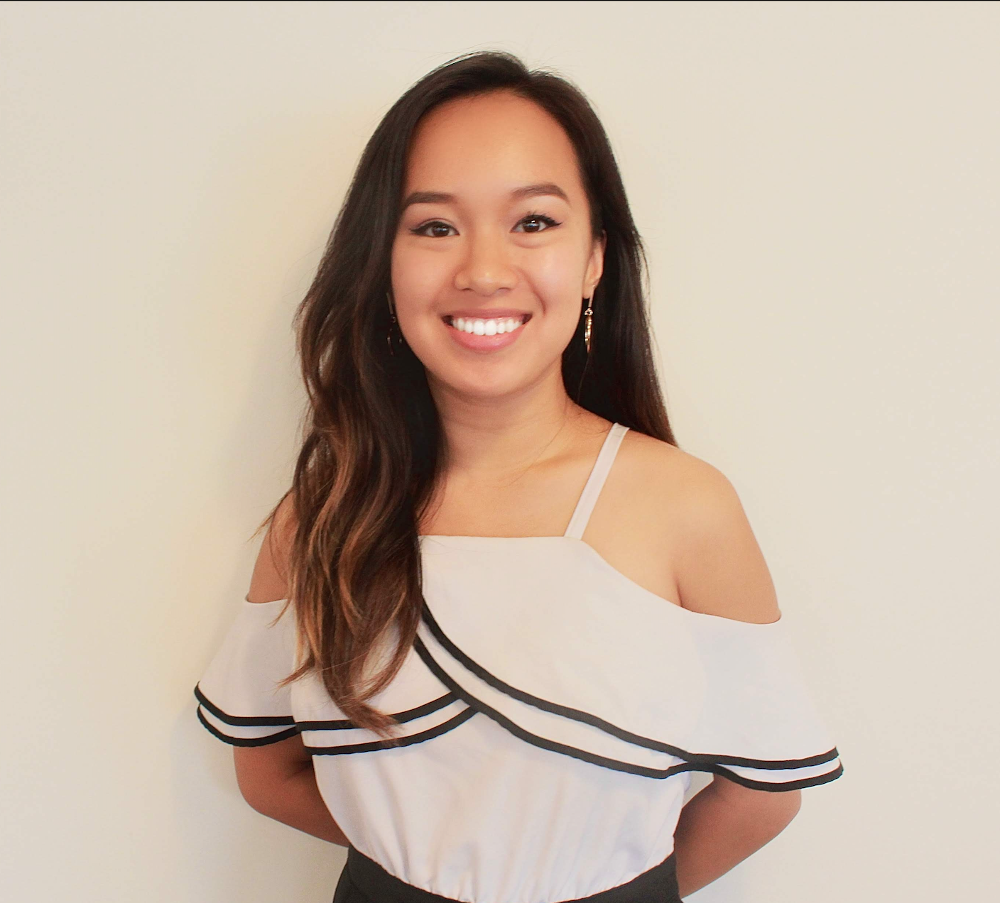
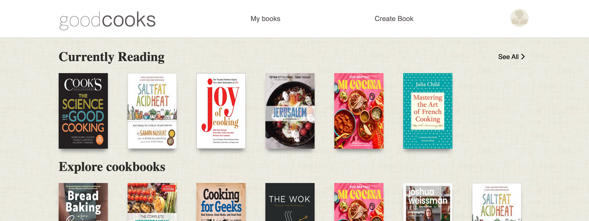
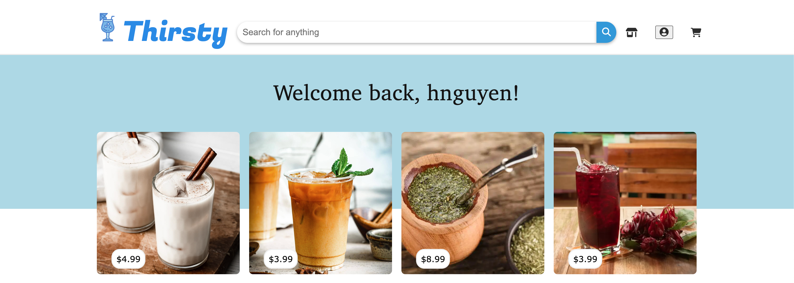
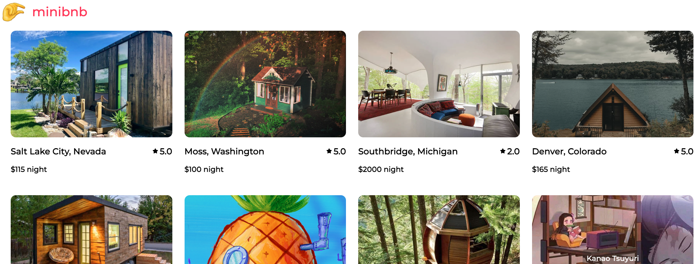

I'm a Software Engineer with a background in education and retail. I am passionate about the nonprofit sector and education, I'm eager to blend my technical skills with my commitment to community impact. I'm on the lookout for a team-oriented company that values continuous learning and growth. I learn best by working with others and thrive in collaborative environments.


I had an incredible time working on Goodcooks, a project that combined my love for cooking and books. Inspired by Goodreads, I decided to create an interactive platform where users could create their own books and customize their profiles. With Python, Flask, React, and Redux, I built the backend and frontend, respectively. Throughout the project, I learned the importance of structured data flow, discipline, and humility. Implementing a well-defined dataflow ensured efficient information management, while discipline allowed me to stay organized and follow best practices. By staying humble and seeking feedback, I continually improved my skills and created a rewarding end product. Overall, the experience of developing Goodcooks was immensely fulfilling, merging my passions and teaching me valuable lessons.

Thirsty stands out as one of my favorite projects because of the opportunity to work alongside some incredibly smart and dedicated classmates. Although our communication had its flaws, we all made a genuine effort to support one another and ensure that nobody fell behind. By dividing the work into pairs, each of us took on different aspects of the project's features, resulting in a harmonious collaboration where our individual strengths, using a React and Redux frontend, as well as a Python and Flask backend, shone through. Through this experience, I learned valuable lessons about using gitflow effectively, communicating openly, and maintaining a professional approach to our work.

This project holds a special place in my journey as its one of the first projects I worked on, marking my initial venture into full stack development. It posed significant challenges initially, as I was unsure where to start and had numerous questions. However, after investing several days into the project, everything I had learned started to come together. Reflecting on this project, I take great pride in witnessing the progress I have made and the knowledge I have gained. Moving forward, I aspire to continue working on this site, ensuring it remains up to date with my current expertise. This project was developed using React and Redux on the frontend, complemented by Express and Sequelize on the backend.